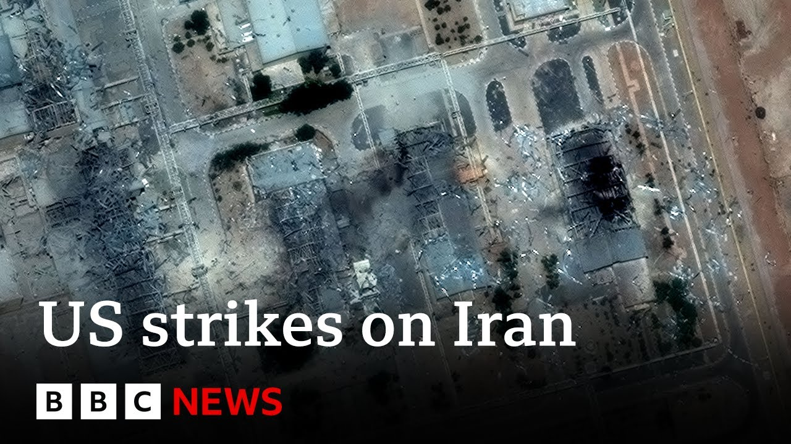

【特朗普称赞对伊朗核设施的“正中靶心”打击 | BBC新闻】
Summary: Donald Trump praised U.S. airstrikes on Iranian nuclear sites as a “bullseye,” claiming massive underground damage. Though the U.S. government denies seeking regime change, Trump hinted otherwise on social media. At the UN, Iran condemned the strikes as illegal aggression, while Russia and China called for a ceasefire. The IAEA scheduled a crisis meeting to assess risks to Iran’s nuclear facilities. Protests erupted globally, and tensions remain high as Iran and Israel continue to exchange fire. The UK backed non-proliferation but urged diplomacy over military action.
摘要： 特朗普称赞美军空袭伊朗核设施是“正中靶心”，并称造成了地下重大破坏。尽管美方否认目标是政权更迭，特朗普在社交媒体上却暗示了这一可能性。伊朗在联合国谴责空袭为非法侵略，俄罗斯和中国呼吁立即停火。国际原子能机构召开危机会议评估风险。全球多地爆发抗议活动，伊朗与以色列仍持续交火。英国强调无核化目标应通过外交方式实现。

⏱️ Estimated Reading Time: 20 min
📚 六级生词 📚 雅思生词 📚 托福生词 📚 专八生词 📚 SAT生词 📚 考研生词 📚 GRE生词 📚 高考生词
President Trump has raised the possibility of regime change in Iran despite his administration insisting that was not the aim of its strikes on the country.
特朗普总统提出了伊朗政权更迭的可能性，尽管他的政府坚称这不是对伊朗实施打击的目标。
At an emergency session of the United Nations Security Council, Iran condemned the attacks as blatant aggression.
在联合国安理会紧急会议上，伊朗谴责这些袭击是公然侵略。
It comes as American stealth bombers returned to base in the United States after striking those nuclear facilities.
此前，美国隐形轰炸机在袭击伊朗核设施后返回了美国本土基地。
The B2 planes were involved in a 37-hour roundtrip flight with multiple midair refuelings and a series of decoys.
B2轰炸机执行了长达37小时的往返飞行任务，期间进行了多次空中加油并投放了一系列诱饵。
The UN says the full extent of the damage is not yet clear.
联合国表示，破坏的全面程度尚不清楚。
Although in the last few hours, President Trump posted that monumental damage was done, adding obliteration is an accurate term.
尽管在过去几小时里，特朗普总统发文称造成了巨大破坏，并称“彻底摧毁”是一个准确的描述。
He said the biggest damage took place far below ground level, ending his post with the word bullseye.
他表示，最大的破坏发生在地下深处，并以“正中靶心”一词结束了帖子。
At the United Nations Security Council emergency meeting, the Iranian ambassador accused the US of waging war under an absurd pretext.
在联合国安理会紧急会议上，伊朗大使指责美国以荒谬的借口发动战争。
The US envoy said any Iranian attack, direct or indirect, against Americans or American bases will be met with devastating retaliation.
美国特使表示，伊朗对美国或美国基地的任何直接或间接攻击都将遭到毁灭性报复。
At the same time, President Trump in a post on social media hinted at regime change in Iran.
与此同时，特朗普总统在社交媒体上发文暗示伊朗可能发生政权更迭。
The British Prime Minister Sakir Stalmer spoke on the phone to President Trump last night and agreed Iran must never have nuclear weapons.
英国首相萨基尔·斯塔默昨晚与特朗普总统通话，双方同意伊朗绝不能拥有核武器。
It comes as one of the big questions is will Iran try to close the strategic straits of Hormuz that would certainly have major economic, political and military consequences.
目前的一大疑问是，伊朗是否会试图封锁霍尔木兹海峡，这必将带来重大的经济、政治和军事后果。
Coming up, we'll look at what Iran might do next.
接下来，我们将探讨伊朗可能采取的下一步行动。
But let's start with that UN Security Council emergency meeting.
但让我们先从联合国安理会紧急会议说起。
Russia and China pushed for an immediate ceasefire with Beijing condemning the US strikes as violations of international law.
俄罗斯和中国敦促立即停火，北京谴责美国的袭击违反国际法。
Iran's ambassador called them a blatant aggression.
伊朗大使称这是公然的侵略行为。
The United States, a permanent member of this council, the depository of the NPT and the only state that has ever used nuclear weapons, murdering millions in two cities, has now once again resorted to illegal force, waged a war against my country under a fabricated and absurd pretext preventing Iran from acquiring nuclear weapons.
作为安理会常任理事国、《不扩散核武器条约》保存国、唯一使用过核武器并在两座城市杀害数百万人的国家，美国现在再次诉诸非法武力，以捏造且荒谬的借口发动对我国的战争，阻止伊朗获取核武器。
What a bitter and tragic irony.
这是多么苦涩而悲惨的讽刺。
Dorothy Shia represents the US at the United Nations.
多萝西·夏代表美国出席联合国会议。
She said that in recent weeks, Iranian officials had intensified their hostile bluster and rhetoric.
她表示，近几周伊朗官员加剧了敌意的虚张声势和言辞攻击。
The time finally came for the United States, in the defense of its ally and in the defense of our own citizens and interest to act decisively.
美国终于到了为捍卫盟友、保护本国公民和利益而果断采取行动的时刻。
The Iranian regime cannot have a nuclear weapon.
伊朗政权不能拥有核武器。
Let us be clear, Iran should not escalate.
我们必须明确，伊朗不应升级局势。
As President Trump said, any Iranian attack, direct or indirect, against Americans or American bases will be met with devastating retaliation.
正如特朗普总统所说，伊朗对美国或美国基地的任何直接或间接攻击都将遭到毁灭性报复。
Israel's UN representative said the US strikes had changed history.
以色列驻联合国代表表示，美国的打击行动改变了历史。
The United States, the leader of the free world, removed the greatest existential threat facing the free world.
作为自由世界的领导者，美国消除了自由世界面临的最大生存威胁。
Just like our operation rising lion, this was not a war of choice.
就像我们的“雄狮崛起”行动一样，这不是一场选择性战争。
This action was a necessity.
这次行动是必要的。
It was a righteous act for the United States, for Israel, for the Middle East, and for the world.
这对美国、以色列、中东乃至世界都是一项正义之举。
But there were stark warnings from the UN chief Antonio Guterish and the head of the nuclear watchdog Rafael Graci.
但联合国秘书长古特雷斯和核监督机构负责人拉斐尔·格罗西发出了严厉警告。
From the outset of the crisis, I have repeatedly condemned any military escalation in the Middle East.
自危机爆发以来，我多次谴责中东地区的任何军事升级。
The people of the region cannot endure another cycle of destruction.
该地区人民无法承受又一轮的破坏。
And yet we now risk descending into a hole of retaliation after retaliation.
然而我们现在正面临陷入报复与反报复恶性循环的风险。
To avoid it, diplomacy must prevail.
为避免这种情况，外交必须占上风。
Civilians must be protected.
平民必须受到保护。
Safe maritime navigation must be guaranteed.
必须保障海上航行安全。
We must act immediately and decisively to halt the fighting and return to serious sustained negotiations on the Iran nuclear program.
我们必须立即果断采取行动，停止战斗，重新就伊朗核计划进行认真持续的谈判。
We have a window of opportunity to return to dialogue and diplomacy.
我们有机会重返对话和外交途径。
If that window closes, violence and destruction could reach unthinkable levels and the global non-proliferation regime as we know it could crumble and fall.
如果这个机会之窗关闭，暴力和破坏可能达到难以想象的程度，而我们熟知的全球防扩散机制可能会崩溃。
Raphael Graci there and the International Atomic Energy Agency has called for a crisis meeting that will take place today.
拉斐尔·格罗西和国际原子能机构已呼吁今天召开危机会议。
They'll discuss the risks posed to those nuclear sites in Iran.
他们将讨论伊朗核设施面临的风险。
President Trump has hinted that there could eventually be regime change in Iran.
特朗普总统暗示伊朗最终可能发生政权更迭。
Writing on his social media platform, Truth Social, the US president said it's not politically correct to use the term regime change.
美国总统在其社交媒体平台“真相社交”上发文称，使用“政权更迭”一词在政治上不正确。
But if the current Iranian regime is unable to make Iran great again, why wouldn't there be a regime change mega?
但如果当前伊朗政权无法让伊朗再次伟大，为什么不能来一场政权更迭呢？
Well, following the US air strikes on the Iranian nuclear sites, Mr. Trump insisted the US was not pushing to remove Iranian leaders from office.
在美国空袭伊朗核设施后，特朗普坚称美国并未试图推翻伊朗领导人。
With his thoughts on President Trump's post, here's our North America correspondent, Anthony Zurka.
关于特朗普总统的帖子，我们的北美记者安东尼·祖尔卡将分享他的看法。
Marco Rubio, the Secretary of State, JD Vance, the vice president, and Pete Hegathth, the Secretary of Defense.
国务卿马可·鲁比奥、副总统JD·万斯和国防部长皮特·赫加斯。
They were on television here in the United States on Sunday morning assuring the country that they were not interested in regime change.
周日早上，他们在美国电视上向全国保证，他们对政权更迭不感兴趣。
And then as you mentioned, Donald Trump came out with that uh post on Truth Social, raising the question the way he often does.
正如你所提到的，特朗普随后在“真相社交”上发文，以他惯常的方式提出了这个问题。
It was a question, not a statement, but raising the prospect of regime change.
这是一个问题而非声明，但提出了政权更迭的可能性。
And I think if you ask administration officials, they will tell you that Donald Trump is the only one who speaks for Donald Trump and for the administration.
我认为如果你询问政府官员，他们会告诉你特朗普是唯一能代表特朗普和政府发言的人。
So, if there was a concerted strategy this morning to downplay regime change, maybe Donald Trump just changed his mind, saw something on Fox News that made him think that this was a more realistic possibility and something that he wanted to float out there to get a conversation started.
因此，如果今早有一个淡化政权更迭的协调策略，也许特朗普只是改变了主意，在福克斯新闻上看到了一些内容，让他认为这是一个更现实的可能性，并想抛出这个话题引发讨论。
Iran and Israel have continued to trade fire with military sites targeted from both sides.
伊朗和以色列继续交火，双方的军事设施都成为攻击目标。
If we look this morning at the scene in Tel Aviv, this is now there at nearly 10 8.
如果我们看看今早特拉维夫的场景，现在时间接近10点8分。
A few hours ago, sirens were sounding across central Israel because of a missile launch from Iran.
几小时前，由于伊朗发射导弹，以色列中部地区响起了警报声。
In the last half an hour, the Israeli army has said it was striking military sites in West Iran.
过去半小时内，以色列军方表示正在打击伊朗西部的军事目标。
The US has issued a worldwide caution for Americans, saying the conflict between Israel and Iran could put those traveling or living abroad at increased security risk.
美国已向全球美国人发出警告，称以色列和伊朗之间的冲突可能增加海外旅行或居住者的安全风险。
Protesters gathered outside the White House to protest the US strikes on Iran's nuclear facilities.
抗议者聚集在白宫外，抗议美国对伊朗核设施的打击。
They're urging the Trump administration to stay out of the region.
他们敦促特朗普政府不要介入该地区。
One founder of the anti-war group, Code Pink, said they're terrified this could lead to a World War II or a nuclear war.
反战组织“粉色代码”的一位创始人表示，他们担心这可能导致第三次世界大战或核战争。
Hundreds of protesters also marched through New York's Times Square.
数百名抗议者还穿过纽约时代广场游行。
Many chanting no war on Iran to show their opposition to the US bombing of the three nuclear sites.
许多人高呼“不要对伊朗开战”，以表示反对美国轰炸三处核设施。
Many at the demonstrations also criticized the close relationship between the US and Israel.
许多示威者还批评了美国与以色列的密切关系。
These pictures are from the Greek capital, Athens, where hundreds of demonstrations uh demonstrators, many carrying red flags, banners, and smoke grenades, marched to the US embassy in a protest.
这些画面来自希腊首都雅典，数百名示威者举着红旗、横幅和烟雾弹，游行至美国大使馆抗议。
It was organized by a group called the Youth Organization of the Communist Party of Greece.
这次活动由希腊共产党青年组织发起。
Well, whilst in Israel, a number of landmarks were were lit up in US flag colors.
与此同时，在以色列，多个地标建筑被点亮成美国国旗的颜色。
They included the Parliament building, the Knesset at Tel Aviv City Hall, also lit up windows to display the US and Israeli flags, whilst the stars and stripes were also projected on the walls of the old city of Jerusalem.
其中包括议会大厦、特拉维夫市政厅的窗户也点亮展示美国和以色列国旗，星条旗还被投射到耶路撒冷老城的城墙上。
Well, let's go live to Jerusalem now.
现在让我们连线耶路撒冷。
Our correspondent Dan Johnson is there this morning.
我们的记者丹·约翰逊今早在那里。
Hello to you, Dan.
你好，丹。
Just talk us through what was going on overnight.
请给我们讲讲昨晚的情况。
We we was just reporting there that sirens were going off across central Israel again.
我们刚刚报道过，以色列中部地区再次响起了警报声。
Yes, there was an air raid alert at about 3:00 a.m. here uh for a large part of the country, but it turned out that that was just one single missile, it appears, that was fired by Iran and successfully intercepted by the Israeli air defenses.
是的，凌晨3点左右，全国大部分地区都响起了空袭警报，但结果似乎只是伊朗发射的一枚导弹，被以色列防空系统成功拦截。
Uh there is also a report this morning of a drone having uh been sent towards Israel in the southern city of Elat, but that is also reported to have been successfully downed without causing any damage or injury.
今早还有报道称，一架无人机被派往以色列南部城市埃拉特，但据报道也被成功击落，没有造成任何破坏或伤亡。
We saw a huge barrage of missiles fired by Iran yesterday in initial response to these US attacks.
昨天我们看到伊朗发射了大量导弹，作为对这些美国袭击的初步回应。
There was significant damage and a large number of injuries, more than 80 people caught up in those attacks.
袭击造成了重大破坏和大量伤亡，超过80人在这些袭击中受伤。
But overnight it's been much quieter despite the continued Israeli air strikes on different targets across Iran.
但昨晚相对平静，尽管以色列继续对伊朗各地的不同目标进行空袭。
Most of uh them military targets, the Israelis trying to further deplete the Iranian capability for storing and launching the sorts of missiles that it has been using in in its attacks on Israel every day since this conflict started.
其中大部分是军事目标，以色列试图进一步削弱伊朗储存和发射导弹的能力，自冲突开始以来，伊朗每天都在使用这些导弹攻击以色列。
So perhaps the fact that we've had such a a relatively quiet night shows that the Iranian capabilities have been depleted over the 10 days of this conflict or that the Iranian leadership is just marking time whilst considering exactly what it is going to do next.
因此，昨晚相对平静的事实可能表明，伊朗的能力在这场持续10天的冲突中已被削弱，或者伊朗领导层正在考虑下一步行动。
There are those uh signs and pictures that you've talked about saying thank you Mr. President.
正如你提到的，有一些标志和图片表达了对特朗普总统的感谢。
Donald Trump's picture is on advertising screens here.
特朗普的照片出现在这里的广告屏幕上。
the Israeli population or probably a majority of it expressing their gratitude to the US president for having got involved.
以色列民众或可能是其中大多数人表达了对美国总统介入的感激之情。
But nobody here expects that to be an end of this conflict.
但这里没有人认为这会是冲突的结束。
The uh Israeli military is still involved this morning in further air strikes over Iran.
今天早上，以色列军方仍在伊朗上空进行进一步空袭。
And all Israelis know that Iran can still pose a threat to this country with ballistic missiles.
所有以色列人都知道，伊朗仍然可以用弹道导弹对这个国家构成威胁。
It's just a question now of how many of those missiles Iran has left, what its capability is to launch and target them, and where it is going to aim them.
现在的问题只是伊朗还剩下多少导弹，其发射和瞄准能力如何，以及它将瞄准哪里。
Will it be at this country?
会是这个国家吗？
Will it be at other potential US targets around the Middle East?
还是中东其他潜在的美国目标？
And that is already having a destabilizing impact on the region.
这已经对该地区产生了破坏稳定的影响。
Uh there are further evacuation flights planned today for diplomats and for citizens of different nations uh who need to get home.
今天还计划为需要回国的外交官和各国公民安排更多撤离航班。
Uh and there are also international flights being canceled to places like Dubai because of the potential risk in the skies above the Middle East.
由于中东上空的潜在风险，飞往迪拜等地的国际航班也被取消。
Okay, for now, thank you very much Dan Johnson there in Jerusalem for us.
好的，现在非常感谢我们在耶路撒冷的记者丹·约翰逊。
Well, as we mentioned, uh, the prime minister Sakir Stalmer and President Trump have, uh, spoken on the phone since the US strikes on Iran.
正如我们提到的，首相萨基尔·斯塔默和特朗普总统在美国袭击伊朗后通了电话。
Let's go live to Westminster now.
现在让我们连线威斯敏斯特。
Our chief political correspondent, Henry Zeman.
我们的首席政治记者亨利·泽曼。
A very tricky line the prime minister has to walk here.
首相在这里需要走一条非常微妙的路线。
Yeah, that's right.
是的，没错。
And I think that's reflected in what we're told by Downing Street about what the prime minister and the US president discussed.
我认为唐宁街关于首相和总统讨论内容的描述反映了这一点。
So Downing Street are saying that they reiterated the grave risk posed by Iran's nuclear program to international security.
唐宁街表示，他们重申了伊朗核计划对国际安全构成的严重风险。
They discussed the actions taken by the United States, namely bombing of Iran's nuclear facilities and agreed that Iran must never be allowed to develop a nuclear weapon.
他们讨论了美国采取的行动，即轰炸伊朗核设施，并一致认为绝不能允许伊朗发展核武器。
It goes on to say they discussed the need for Iran to return to the negotiating table as soon as possible and to make progress on a lasting settlement.
声明还表示，他们讨论了伊朗需要尽快重返谈判桌，并在持久解决方案上取得进展。
And I think what you see in that account of that phone call is this slightly unusual position the UK finds itself in of agreeing with the ends.
我认为从这次通话的描述中可以看出，英国处于一种略微不寻常的立场，即同意最终目标。
They agree with the US that Iran must be a non-nuclear country, but they don't agree quite in the same way at all on the means.
他们同意美国的观点，即伊朗必须成为一个无核国家，但在方法上并不完全一致。
namely the UK was urging a diplomatic means to reaching that and the US decided to participate in or indeed to launch its own strikes on Iran's nuclear facilities.
具体而言，英国主张通过外交手段实现这一目标，而美国决定参与甚至自行发动对伊朗核设施的打击。
But I assume many in parliament are quite nervous and concerned about what might happen next and where Britain will get drawn in.
但我认为议会中许多人对接下来的事态发展以及英国可能被卷入感到非常紧张和担忧。
Yeah, I mean in some ways the UK was uh given a a sort of reprieve on that issue for now by the US because the way in which it launched its strikes, flying those bombers all the way from Missouri, refueling midair meant that the US did not end up asking the UK's permission to use the Diego Garcia air base, which the UK controls on the Chaos Islands, uh to carry out those strikes.
是的，从某种程度上说，美国目前暂时让英国避开了这个问题，因为美国发动打击的方式是从密苏里州远程派出轰炸机并进行空中加油，因此最终没有要求英国允许使用其控制的查戈斯群岛上的迪戈加西亚空军基地来执行打击。
That is something that there was a lot of sensitivity about in the UK government in the days in the run-up to these strikes because that would have required the UK to make a decision.
在英国政府内部，打击行动前的几天里对此非常敏感，因为这将要求英国做出决定。
Sure, it wouldn't have been UK fighter planes carrying out the strikes, but still it would have required the UK to say yes or no.
当然，执行打击的不会是英国战斗机，但仍需要英国表态同意或拒绝。
uh that didn't happen, but that's not to say it won't happen in the coming days or weeks.
这并未发生，但这并不意味着未来几天或几周内不会发生。